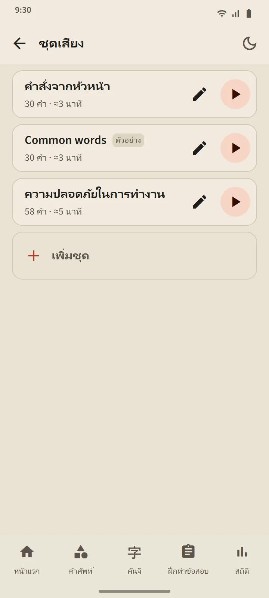
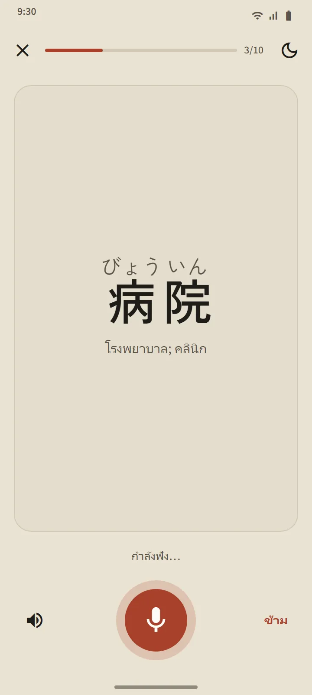

ชุดเสียงที่คุณสร้างเอง
สร้างชุดที่มี 5 ถึง 100 คำ: ค้นหาทีละคำ หรือนำมาทีเดียวจากชุดคำศัพท์ใดก็ได้ เครื่องเล่นจะอ่านแต่ละคำเป็นภาษาญี่ปุ่น ตามด้วยความหมายในภาษาของแอป (ปิดสวิตช์ “อ่านความหมายออกเสียง” หากต้องการฟังภาษาญี่ปุ่นอย่างเดียว) คำปัจจุบันแสดงตัวใหญ่พร้อมฟุริงานะ แตะคำในรายการเพื่อข้ามไปที่คำนั้น
ปุ่มควบคุม: สลับลำดับ เล่นซ้ำ และความเร็ว 0.75×, 1× หรือ 1.25× เครื่องเล่นทำงานต่อแม้หน้าจอดับหรือคุณสลับไปแอปอื่น การแจ้งเตือนของเครื่องเล่นและปุ่มบนหูฟังยังควบคุมได้
- เวอร์ชันฟรี: 3 ชุด Premium: ไม่จำกัด และดาวน์โหลดชุดเป็นไฟล์เสียงไฟล์เดียว (M4A) ได้
- ชุดตัวอย่าง “Common words” สร้างให้อัตโนมัติจากคำที่พบบ่อยที่สุด แก้ไขหรือลบได้ตามต้องการ
- การฟังไม่เปลี่ยนตารางทบทวนหรือขั้นของคำเลย

ฝึกพูด: พูดแล้วไปต่อ
คำที่คุณจำได้แล้วหรือเชี่ยวชาญแล้วจะขึ้นบนการ์ด ไมโครโฟนเปิดเอง คุณพูดคำนั้น และหากโทรศัพท์จับได้ คำถัดไปจะขึ้นมา หากไม่ได้ หน้าจอจะแสดงสิ่งที่ได้ยินแล้วฟังอีกครั้ง หลังพลาดสามครั้งจะเล่นตัวอย่างให้ฟัง ปุ่มไมโครโฟน ปุ่มตัวอย่าง และปุ่ม “ข้าม” มีอยู่เสมอ หนึ่งรอบมี 5, 10, 15 หรือ 20 คำ
เสียงของคุณถูกประมวลผลโดยบริการรู้จำเสียงพูดของโทรศัพท์ (ปกติคือของ Google) แอปไม่บันทึกหรือเก็บเสียงนั้น ระบบตัดสินเฉพาะคำ ไม่ตัดสินสำเนียงของคุณ เนื่องจากการรู้จำเสียงพูดอาจฟังผิดได้ การฝึกนี้จึงไม่เคยลดขั้นของคำ

เขียนคันจิ: ทีละขีด
สำหรับคันจิที่คุณจำได้แล้วหรือเชี่ยวชาญแล้ว จะแสดงเฉพาะความหมายและคำอ่าน คุณเขียนในกล่องขนาดเต็มความกว้าง และแต่ละขีดจะถูกตรวจเมื่อคุณยกนิ้ว: รูปทรง ทิศทาง และลำดับ ขีดที่ถูกจะถูกปรับเข้ากับรูปมาตรฐาน ลำดับที่ผิดหรือทิศทางที่กลับด้านจะถูกปฏิเสธพร้อมคำอธิบายหนึ่งประโยค หลังพลาดสองครั้ง ขีดถัดไปจะปรากฏจาง ๆ พร้อมจุดเริ่มต้น
- จากความจำ: กล่องว่างเปล่า มีเส้นร่าง: คันจิปรากฏจาง ๆ ไว้อุ่นเครื่อง แตะตามลำดับ: แสดงคันจิเต็มตัว แล้วแตะขีดตามลำดับ
- ปุ่ม แอนิเมชัน เล่นการเขียนคันจิทั้งตัวให้ดูได้ทุกเมื่อ
- คันจิจะนับว่า เขียนได้แล้ว เมื่อคุณเขียนจากความจำโดยไม่มีตัวช่วยใน 2 วันที่ต่างกัน รอบละ 5, 10 หรือ 15 ตัว


ออกเสียงได้ทุกที่
การ์ดคำศัพท์ การ์ดคันจิ รายละเอียดคำ บทเรียนคานะ ตัวอย่างไวยากรณ์ และข้อสอบฟัง ทั้งหมดอ่านโดยเอนจินอ่านออกเสียงข้อความภาษาญี่ปุ่นของโทรศัพท์คุณ จึงไม่ต้องดาวน์โหลดไฟล์เสียง คุณภาพเสียงขึ้นกับเอนจินของโทรศัพท์แต่ละเครื่อง